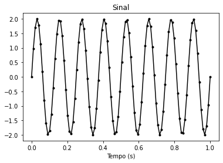

Informação de Fisher e Cramér-Rao
Seja uma variável aleatória cuja distribuição depende de com densidade . As condições de regularidade FI são
-
A derivada de com respeito a existe com probabilidade 1.
-
Podemos diferenciar sob o sinal da integração. (Veja aqui).
-
O conjunto não depende de .
Assuma as condições FI. A informação de Fisher é definida como A função é chamada de função score.
Se , definimos as matrix informação de Fisher como
Agora seja uma amostra aleatória e a densidade conjunta de . Denote . Como definimos, a informação de Fisher é . Como , temos que Portanto, para amostras aleatórias, basta calcular a informação considerando a densidade de uma variável aleatória.
Teorema: Se valem as condições de regularidade FI, a média da função score é 0, isto é, pois podemos tirar a derivada do valor esperado e, então, basta ver que a integral da densidade é constante igual a . Logo, vale que a derivada é nula. Além do mais,
Esse resultado se estende para mais dimensões, com
import numpy as np
from scipy.stats import norm
from scipy.misc import derivative
from scipy.optimize import curve_fit
import matplotlib.pyplot as plt
from seaborn import violinplot
import inspect
Exemplo Construtivo
Vamos pensar num caso bem simples: amostra aleatória , onde o parâmetro é conhecido e não.
De forma direta, poderíamos perguntar qual a Informação de Fisher (ou Informação Diferencial) da amostra aleatória sobre o parâmetro desconhecido .
- Vamos encontrar a distribuição conjunta:
- Vamos encontrar a verossimilhança: é a distribuição conjunta como função do parâmetro!
Vamos comparar para e
loglikelihood = lambda mu, sigma, x: np.sum(np.log([norm(loc = mu, scale = sigma).pdf(xi) for xi in x]), axis = 0)
sigmas = [1,3,5,10]
mu_true = 5
mu_range = np.linspace(0,10,1000)
fig,ax = plt.subplots(2,2,figsize = (16, 10))
fig.suptitle('Comparando Log-verossimilhanças da Distribuição Normal')
def generate_curves(sigma, ax, n = 20, n_times = 50):
for i in range(n_times):
x = np.random.normal(loc = mu_true, scale = sigma, size = n)
logvalues = loglikelihood(mu_range, sigma, x)
ax.plot(mu_range, logvalues, color = 'blue', alpha = 0.2)
ax.vlines(mu_true, ymin = ax.get_ylim()[0], ymax = ax.get_ylim()[1], linestyle = '--')
ax.set_title(r'$\sigma =$ {}'.format(sigma))
ax.set_xlabel(r'$\mu$')
generate_curves(sigmas[0], ax[0][0])
generate_curves(sigmas[1], ax[0][1])
generate_curves(sigmas[2], ax[1][0])
generate_curves(sigmas[3], ax[1][1])

- Vamos ver como se comporta derivada. Esse é o score:
score = lambda mu, sigma, x: derivative(loglikelihood, mu, dx = 1e-5, args = (sigma, x))
fig,ax = plt.subplots(2,2,figsize = (16, 10))
fig.suptitle('Comparando Scores da Distribuição Normal')
def generate_curves(sigma, ax, n = 20, n_times = 50):
for i in range(n_times):
x = np.random.normal(loc = mu_true, scale = sigma, size = n)
scorevalues = score(mu_range, sigma, x)
ax.plot(mu_range, scorevalues, color = 'blue', alpha = 0.2)
ax.vlines(mu_true, ymin = ax.get_ylim()[0], ymax = ax.get_ylim()[1], linestyle = '--')
ax.set_title(r'$\sigma =$ {}'.format(sigma))
ax.set_xlabel(r'$\mu$')
ax.set_ylim((-10,10))
generate_curves(sigmas[0], ax[0][0])
generate_curves(sigmas[1], ax[0][1])
generate_curves(sigmas[2], ax[1][0])
generate_curves(sigmas[3], ax[1][1])

fig,ax = plt.subplots(2,2,figsize = (16, 10))
fig.suptitle('Comparando Histogramas dos Scores para mu')
def generate_histograms(mu, sigma, ax, n = 15, n_times = 100):
scorevalues = []
for i in range(n_times):
x = np.random.normal(loc = mu_true, scale = sigma, size = n)
scorevalues.append(score(mu, sigma, x))
violinplot(scorevalues, ax = ax)
ax.set_title(r'$\sigma =$ {}'.format(sigma))
ax.set_xlabel('score')
generate_histograms(5, sigmas[0], ax[0][0])
generate_histograms(5, sigmas[1], ax[0][1])
generate_histograms(5, sigmas[2], ax[1][0])
generate_histograms(5, sigmas[3], ax[1][1])

- A informação de Fisher é a Variância da função score em , isto é:
Limites inferiores para a variância
Para estimadores não enviesados, o erro quadrático se iguala à variância. Como nem sempre é possível obter valores exatos para variância, é de interesse procurar por limites inferiores desses valores. Mais do que isso, se encontramos um estimador cuja variância seja um limite inferior, estaremos encontrando um UMVUE.
Desigualdade da variância
A desigualdade de Cauchy-Schwarz para variáveis aleatórias, tratando a covariância como um produto interno nesse espaço, é escrita da seguinte forma:
Limite inferior de Cramér-Rao
Sejam a informação de Fisher e uma estatística com esperança finita. Suponha que valha algumas condições de regularidade(XXX: Quais?) e que . Então
Observe que se é não enviesado, então o limite inferior da variância é o inverso da informação de Fisher.
📝 Exemplo (Normal)
Seja com fixo. Um estimador para é , que é não enviesado, em particular. A informação de Fisher é o que implica que é limitado inferiormente por . Só que sabemos que ele atinge esse valor. Portanto, esse estimador é UMVUE, pois tem variância mínima.
A desigualdade de Cramér-Rao é uma consequência da desigualdade de Cauchy-Schwarz. Esta última diz que vale a igualdade se, e somente se, os fatores são linearmente independentes. No nosso, caso, isso significa que a desigualdade de Cramér-Rao se torna uma igualdade se, e somente se, e a função são linearmente relacionadas, isto é, Resolvendo essa equação, obtemos que que pertence à família exponencial. Logo, se é uma estatística suficiente para um parâmetro de uma distribuição vinda da família exponencial, a desigualdade de Cramér-Rao vira uma igualdade. Além disso, essa é única situação.
Fora da família exponencial, a desigualdade de Cramér-Rao não pode ser alcançada! Se uma estatística tem variância igual ao limite inferior de Cramér-Rao, ele é dito estimador eficiente.
Desigualdade de Chapman-Robbins
Seja e o suporte da distribuição de . Assuma que para cada , exista tal que (isso acontece quando é o mesmo para todo ). Então,
Note que essa desigualdade vale para casos mais gerais. Porém, ela também é consequência da desigualdade de Cauchy-Schwarz.
Sistema de Bhattacharyya
Assuma as condições do Teorema de Cramér-Rao e que a derivada sob pode passar sob o sinal de integração Então , em que
Esse resultado é uma consequência direta de uma desigualdade envolvendo variância de um estimador e covariâncias dele com outras funções dos dados e do parâmetro.
Desigualdade de Cramér-Rao multidimensional
Assumindo as condições do caso unidimensional mais que a matriz informação de Fisher seja positiva definida, então em que .
Exemplo Numérico do limite de Cramér-Rao
Considere um sinal (como uma música) com três parâmetros, amplitude, frequência e fase inicia.
Saberemos o número de amostras que sera 100Hz com nível de ruído de 0.1
s = lambda t,a,f,ph: a*np.sin(2*np.pi*f*t + ph) # função que representa o sinal
p0 = [2,8,0] # Amplitude, frequência e fase inicial para testar
noise = 0.1
T = np.linspace(0,1,100) #100 valores entre 0 e 1 igualmente espaçados
plt.plot(T, s(T, *p0), '.-k')
plt.xlabel('Tempo (s)')
plt.title('Sinal')
plt.show()

Vamos usar inspect para nos ajudar a pegar labels das funções, isto é, os parâmetros necessários das funções. Essa biblioteca fornece várias funções de ajuda desse tipo. Dê uma olhada.
parameters = str(inspect.signature(s)).strip('()').replace(' ', '').split(',')[1:]
p0dict = dict(zip(parameters, p0))
p0dict
{'a': 2, 'f': 8, 'ph': 0}
No caso geral, calcular a Matriz de Informação de Fisher não é trivial. Por isso, vamos calcular para o caso em que as medições são de uma amostra com distribuição multivariada normal, isto é, é uma distribuição normal, só que em mais dimensões, em particular, 441 dimensões (número de pontos no tempo)
Se calcularmos a informação de Fisher, podemos ver que:
onde , é o vetor média da normal multivariada e é a variância de cada marginal da normal. Não se assuste. Na multivariada, temos uma matriz para indicar as variâncias (ela se chama Matriz de Covariâncias, na verdade). O que estou dizendo é que ela é vezes a identidade. É bom conhecer essa distribuição!
Por enquando acredite em mim! Ou no Wikipedia.
Vou chamar
# Usamos ** para desempacotar elementos de um dicionário.
string = "a: {a} f: {f} ph: {ph}".format(**p0dict)
print(string)
a: 2 f: 8 ph: 0
D = np.zeros((len(p0), len(T)))
# para cada parâmetro
for i, parameter in enumerate(parameters):
# para cada ponto no tempo
for k, t in enumerate(T):
func = lambda x: s(t, **dict(p0dict, **{parameter: x}))
# Calculamos a derivada com respeito a x, que nesse caso é o valor do parametro
D[i,k] = derivative(func, p0dict[parameter], dx = 1e-4)
Veja que o tamanho de D é o seguinte:
D.shape
(3, 100)
plt.plot(T, s(T, *p0), '--k', lw=2, label='Sinal')
for Di, parameter in zip(D, parameters):
# Estamos acessando Di = linha_i(D)
plt.plot(T, Di, '.-', label=parameter)
plt.legend()
plt.xlabel('Tempo (s)')
plt.show()

O que indica? É a derivada da média com respeito ao i-ésimo parâmetro. Logo indica o quanto o quando a amostra afeta o parâmetro . Veja que quando temos picos no seno, teremos pico na amplitude,. Também vemos que a fase inicial não tem essa relevância. Vemos também que o sinal se torna mais e mais sensível à frequência.
Assim, podemos calular a informação de fisher, usando einsum
I = 1/noise**2*np.einsum('mk,nk', D, D)
print(I)
[[ 4.95000000e+03 -5.64643569e+02 -3.43706036e-09]
[-5.64643569e+02 2.68635205e+05 6.34601694e+04]
[-3.43706036e-09 6.34601694e+04 2.01999999e+04]]
Podemos calcular o limite de Cramér-Rao para qualquer estimador não enviesado. Nesse caso, veja aqui para mais detalhes. Mas não se incomode com os detalhes, se preferir.
iI = np.linalg.inv(I)
print('Cramér-Rao Limite Inferior')
for parameter, variance in zip(parameters, iI.diagonal()):
print('{}: {:.2g}'.format(parameter, np.sqrt(variance)))
Cramér-Rao Limite Inferior
a: 0.014
f: 0.0038
ph: 0.014